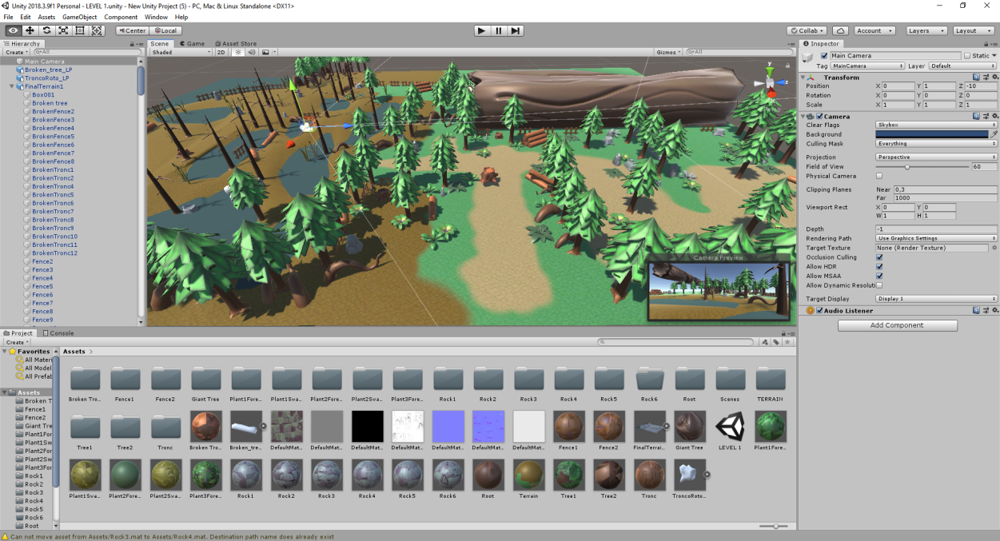
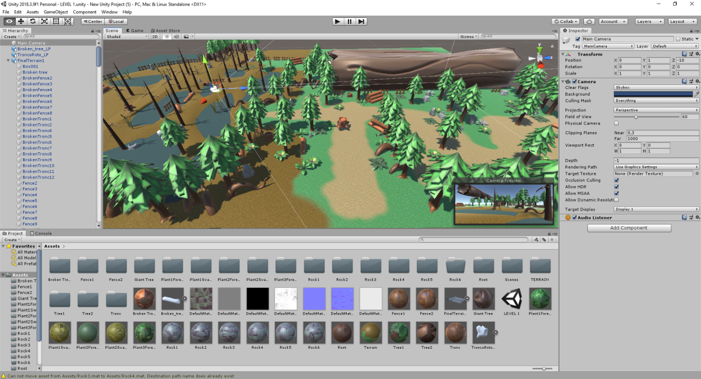

Nadine Gutiérrez Pociño
Chicos, a esto le va a hacer falta un rework. Pero está bien eh

Project overview
Hello! I'm Nadine, Lead Artist of Magical Muffin.
In this project I've had the opportunity to lead nine artists. I was focused on manage every art member so that we can finally have final art for the game. At the beginning I helped some art teammates to understand all the pipeline process (2D & 3D). As a member of the department, I also did some art when I had everyone well organized.
One of my main functions as Lead was to organize the different sprint art tasks. Organize all the department members on ClickUp by agreeing with them their deadlines and then communicate it to the other Leads and Producer.
The goal of the art team was to recreate a The Witcher style in a cartoon way so that the game seemed funny. We opted for an exaggerated proportions to get that general goal.
Art Pipeline

2D Concepts: Photoshop
3D Modeling: 3dsMax, Maya
3D Sculpt: ZBrush
3D Paint: Substance Painter, Substance Designer
We were able to use Mixamo to import animations to our characters. Now that we were using this tool, we have been able to put more characters in game due the project time.


 
